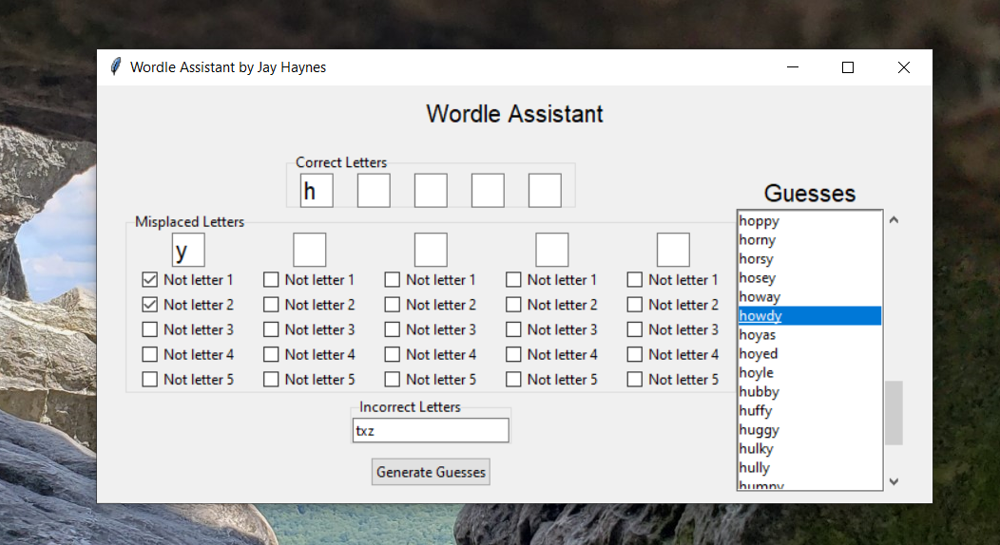

Hello, my name is Jay and I'm a sceintist with an enthusiasm for nature and an interest in using biology to solve problems. I like to explore programming tools to assist in experimental work as well as for the fun/challenge. For more info on my work experience and lab skills checkout my LinkedIn Profile. To see what coding projects I'm working on, checkout my Github Profile and project links below.
Wordle Assistant
This is another fun project for anybody who wants some guidance playing wordle. I built a version of the assistant using python/tkinter which can be found on Github. I also created a version using HTML/CSS/javascript that's available as a webpage. Link to the github repository here.
In order to make Wordle Assistant, I needed a list of words for possible solutions/guesses. I found a list of the words accepted by the New York Times version of the game. It's available as a gist on github here. The list contains all the words that the NYT Wordle game will accept (all of the words I've played have worked so far!). That being said, not all the words in this list are viable solutions. Anybody who has played wordle knows there are certain words that can be solutions and others than you can play but will probably never be the wordle word of the day. That being said, I decided to keep the full list of acceptable guesses instead of only using words that could be the word of the day for a few reasons:
- Increases exposure to new and interesting words (one potential reason a person may play wordle)
- Allows a player to fine tune word choices to screen letters and positions of interest
Other people have built tools similar to mine that will suggest the best play and provide scores that assess the effectiveness of a word as a guess. A great example of this can be found here. While I think tools like this are cool, I built Wordle Assistant to enhance the way I like to play wordle (experience new words and develop intution on what a good wordle guess is.)
In the python version of Wordle Assistant, I used the python tkinter library for the gui and I used the sqlite3 library to both convert the guesses data into a SQLite database file and then query the database to generate guesses. Both versions of Wordle Assistant utilize regular expressions to generate guesses with the appropriate letters excluded/included as indicated by the user inputs. The user inputs are as follows:
- Correct Letters
- Misplaced Letters
- Incorrect Letters
The correct letter spaces are reserved for letters that are known to be in the word and are left empty if the letter at that position in the word is unknown (pretty simple). The misplaced letters are for letters that are in the word but the correct position is unknown. After inputting a letter, the user can tick boxes below to indicate positions the letter does NOT belong in. And then the last input is simply any letters that aren't in the word. Words populate the guesses box after the "Generate Guesses" button is clicked. Any combination of inputs can be included/omitted.
TicTacToe
This is a fun app project I put together to practice using object oriented programming concepts such as classes, objects, and others. I used python and the tkinter package in the python standard library. You can play with a friend or try and best the computer player!